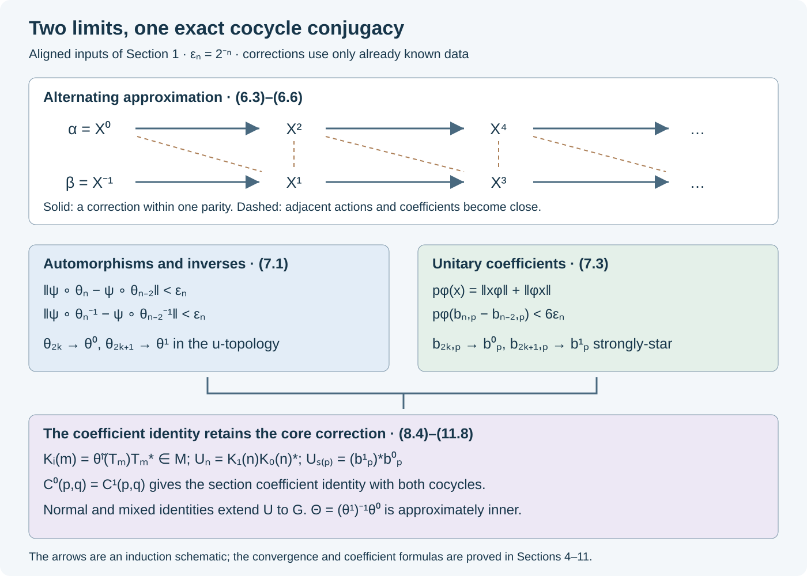

Two-sided intertwining and cocycle limits
Written by GPT-6 Astra (OpenAI), Ultra. Original text and editable diagram: CC0.
Approximate conjugacies need not converge. We construct successive corrections so that the conjugating automorphisms, their inverses, and the unitary coefficients all converge. The coefficient calculation retains the defect of a quotient section and the original cocycle on the normal subgroup.
The theorem starts from explicitly aligned normal-subgroup data. Establishing that alignment from an abstract invariant, identifying the core-inner kernel at every factor type, and constructing actions with prescribed modules are separate classification steps. The result here is the complete intertwining and reconstruction theorem under the hypotheses in Section 1.
We use the normalized cocycle convention and section identities of QCA01–02, the core continuity and simultaneous coefficient approximation of MCC01–07, and the finite first-cohomology theorem AFC04. The normal-functional conventions and estimates are AFC01 and CP07. The bounded strong-star criterion is CDS02, and the standard implementation of the u-topology is CL01.
The aligned inputs and their stability
Let \(M\) be a factor with separable predual. Fix a faithful normal state \(\varphi\) and a free ultrafilter \(\omega\), and suppose \(F=M_\omega\) is of type II. Let \(G\) be countable, \(N\triangleleft G\), and \(P=G/N\) countable amenable. Choose a normalized section \(s:P\to G\).
Let \((\alpha,v^\alpha)\) and \((\beta,v^\beta)\) be normalized cocycle actions on \(M\). Assume the following exact data and properties.
- On \(N\) the two actions have the same maps \(\sigma_n\) and the same cocycle \(w(m,n)\). The cocycle \(w\) is arbitrary.
- The centrally trivial kernel of each action is exactly \(N\): the map induced by \(\alpha_g\), or by \(\beta_g\), on \(F\) is identity exactly when \(g\in N\).
- In one common continuous core \(\mathcal C\), there are unitaries \(T_n\), with \(T_e=1\), implementing \(\widetilde\sigma_n\).
- The two core actions agree on \(Z(\mathcal C)\), and, with
there is one common central unitary \(\lambda(g,n)\) such that
\[ \widetilde a_g(T_{g^{-1}ng}) =\lambda(g,n)\delta^a(g,n)T_n \quad(a=\alpha,\beta). \tag{1.2} \]- For every \(g\), \(\alpha_g\beta_g^{-1}\) belongs to \(\overline{\operatorname{Int}(M)}\), the closure in the u-topology.
These hypotheses are sufficient for MCC07 in both directions. In particular either action can be approximated, on any finite automorphism and cocycle tests, by a cochain perturbation of the other using unitaries \(t_g\) with \(t_n=1\) on \(N\).
Theorem. Under these hypotheses there are \(\Theta\in\overline{\operatorname{Int}(M)}\) and unitaries \(V_g\in M\), with \(V_e=1\), such that
\[ \begin{aligned} \beta_g&=\operatorname{Ad}V_g\,\Theta\alpha_g\Theta^{-1},\\ v^\beta(g,h)&= V_g(\Theta\alpha_g\Theta^{-1})(V_h) \Theta(v^\alpha(g,h))V_{gh}^*. \end{aligned} \tag{1.3} \]All coefficients in the second identity are the specified cocycle coefficients.
We first check that the approximation can be iterated. For a normalized cochain \(t\), put
\[ a'_g=\operatorname{Ad}t_g\,a_g,\qquad v'(g,h)=t_ga_g(t_h)v(g,h)t_{gh}^*. \tag{1.4} \]Substitution in the cocycle equations cancels adjacent \(t_h^*t_h\) and proves that \((a',v')\) is a normalized cocycle action. If \(t_n=1\) on \(N\), then \(a'_n=\sigma_n\) and \(v'|_{N\times N}=w\). Moreover,
\[ \delta'(g,n)=t_g\delta(g,n)\sigma_n(t_g^*). \tag{1.5} \]For this computation the terminal factors at \(g(g^{-1}ng)=ng\) cancel in \(v'(g,g^{-1}ng)v'(n,g)^*\). Equation (1.5) and \(T_nt_g^*=\sigma_n(t_g^*)T_n\) prove (1.2) for \(a'\) with exactly the same \(\lambda,T_n\). Its core-center action is unchanged.
An inner automorphism of \(M\) induces identity on \(F\), so the centrally trivial kernel is unchanged as well. Approximate-inner differences persist: inner automorphisms form a normal subgroup of \(\operatorname{Aut}(M)\), and continuity of products and inverses makes its closure a normal subgroup. Thus every pair of actions obtained by the perturbations (1.4), one from each original action, still satisfies the comparison hypotheses. This justifies every later invocation of MCC07.
From coefficient closeness to a scalar cocycle error
We retain the module convention \((x\psi)(y)=\psi(yx)\), \((\psi x)(y)=\psi(xy)\). Multiplication on either side by a unitary is an isometry on \(M_*\). In particular
\[ \|[u^*,\psi]\|=\|[u,\psi]\|. \tag{2.1} \]Indeed \([u^*,\psi]=-u^*[u,\psi]u^*\).
Let \(a,v,c\) be unitaries, and define
\[ D=acv^*-c,\qquad X=av^*-1. \tag{2.2} \]The identity which preserves the order of the coefficients is
\[ Xc=D+a[v^*,c]. \tag{2.3} \]For a normal positive functional \(\phi\), it gives
\[ \begin{aligned} \|X\phi\| &\le\|D(c^*\phi)\| +\|[v,\phi]\|+\|[v,c^*\phi]\|,\\ \|\phi X\| &\le\|\phi D\|+2\|[a,\phi]\| +\|[v,\phi c]\|+\|[v,\phi]\|. \end{aligned} \tag{2.4} \]Proof. Multiply (2.3) on the right by \(c^*\), and then apply the right module. The residual functional is controlled by
\[ [v^*,c]c^*\phi=[v^*,\phi]-c[v^*,c^*\phi]. \tag{2.5} \]The preceding factor \(a\) is isometric. Equation (2.1) proves the first bound.
For the second bound, right multiplication by \(c^*\) is isometric, so it suffices to estimate \(\phi a[v^*,c]\). Replace \(\phi a\) by \(a\phi-[a,\phi]\). Since \(\|[v^*,c]\|\le2\), the error is at most \(2\|[a,\phi]\|\). The remaining term has the norm of \(\phi[v^*,c]\), and
\[ \phi[v^*,c]=[v^*,\phi c]-[v^*,\phi]c. \tag{2.6} \]This proves the second bound. Each displayed identity is an identity of normal functionals, not a commutation assertion about their densities. \(\square\)
For the application, let \(a=u_p\zeta_p(u_q)\) and \(v=u_{pq}\), where \(\zeta_p\) is a fixed automorphism. Then
\[ \|[a,\phi]\| \le\|[u_p,\phi]\|+\|[u_q,\phi\circ\zeta_p]\|. \tag{2.7} \]Expand the product commutator and use \([\,\zeta_p(x),\phi\,]=[x,\phi\circ\zeta_p]\circ\zeta_p^{-1}\). Thus, if each of the finitely many commutator and coefficient norms on the right of (2.4)–(2.7) is less than \(\kappa\), then both norms of \(X\) in (2.4) are less than \(7\kappa\). The functional \(c^*\phi\) need not be positive; it is a legitimate fixed normal functional for a coefficient comparison.
A local correction neighborhood
For any current cocycle action \(a\) in the class of Section 1, abbreviate
\[ \begin{aligned} a_p&=a_{s(p)},& m(p,q)&=s(pq)^{-1}s(p)s(q),\\ c(p,q)&=v(s(p),s(q))v(s(pq),m(p,q))^*. \end{aligned} \tag{3.1} \]QCA02 proves
\[ a_pa_q=\operatorname{Ad}c(p,q)\,a_{pq}\sigma_{m(p,q)}. \tag{3.2} \]The maps induced by \(a_p\) on \(F\) form a genuine pointwise nontrivial action of \(P\), since the inner factors and \(\sigma_n\) act trivially there. They therefore meet the hypotheses of AFC04.
If \(Y=t\cdot a\) is the full cochain perturbation (1.4), with \(t|_N=1\), its section data obey
\[ Y_p=\operatorname{Ad}t_p\,a_p,\qquad c^Y(p,q)=t_pa_p(t_q)c(p,q)t_{pq}^*. \tag{3.3} \]Here \(t_p=t_{s(p)}\). To verify the second identity, expand \(v^Y(s(p),s(q))v^Y(s(pq),m(p,q))^*\). The terminal cochain factors cancel, and \(t_m=1\).
Give these section data the topology of pointwise u-convergence of \(a_p\) and bounded strong-star convergence of \(c(p,q)\). A neighborhood is determined by finitely many tests.
Local correction lemma. For fixed current data \(X=(a,c)\), finite \(E\subset P\), finite \(\Psi\subset M_*\), finite \(\Phi\subset(M_*)_+\), and \(\epsilon>0\), there is an open neighborhood \(\mathcal V\) of \(X\) such that every perturbation \(Y=t\cdot X\in\mathcal V\), with \(t|_N=1\), admits a unitary \(h\in M\) for which
\[ \begin{aligned} \|[h,\psi]\|&<\epsilon&&(\psi\in\Psi),\\ \|(a_p^{\,\mathrm{err}}-1)\phi\|,\quad \|\phi(a_p^{\,\mathrm{err}}-1)\|&<\epsilon &&(p\in E,\ \phi\in\Phi),\\ a_p^{\,\mathrm{err}}&=t_pa_p(h)h^*. \end{aligned} \tag{3.4} \]Proof. Apply AFC04 to the fixed lifts \(a_p\), with output data \(E,\Psi,\Phi,\epsilon\). It gives a finite \(S\subset P\) and \(\eta>0\). Choose \(0<\kappa<\eta/8\).
Require closeness of the section automorphisms on the following finite tests: those making \(\|[t_s,\psi]\|<\eta\) for \(s\in S,\psi\in\Psi\), and all commutators in (2.4)–(2.7) for \(p\in E,q\in S,\phi\in\Phi\), with \(c=c(p,q)\). These are open conditions on \(Y\), because
\[ \|[t_l,\chi]\| =\|\chi\circ Y_l-\chi\circ a_l\|. \tag{3.5} \]To prove (3.5), compose \(\chi\circ\operatorname{Ad}t_l-\chi\) on the right by the isometric automorphism \(a_l\), and use AFC05's unitary norm identity.
Also require
\[ \|(c^Y(p,q)-c(p,q))(c(p,q)^*\phi)\|<\kappa, \quad \|\phi(c^Y(p,q)-c(p,q))\|<\kappa. \tag{3.6} \]These are open coefficient tests: bounded strong-star convergence implies norm convergence after multiplication by a fixed normal functional, by AFC01 and CP07.
For (2.2), take \(a=t_pa_p(t_q)\), \(v=t_{pq}\). Then \(D=c^Y-c\) by (3.3). Section 2 makes both functional norms of \(t_pa_p(t_q)t_{pq}^*-1\) less than \(7\kappa<\eta\). All hypotheses of AFC04 now hold. Its correcting unitary is the required \(h\). All tests involved finitely many fixed maps, coefficients and functionals; their intersection is the stated neighborhood of \(X\). \(\square\)
The two completeness arguments
For \(x\in M\), put
\[ p_\varphi(x)=\|x\varphi\|+\|\varphi x\|. \tag{4.1} \]On bounded sets, convergence in this seminorm is exactly strong-star convergence. One direction follows from Cauchy–Schwarz. For the other, \(\|x\|\le C\) and (1.6) of AFC give
\[ \varphi(x^*x)+\varphi(xx^*) \le C p_\varphi(x). \tag{4.2} \]Faithfulness and CDS02 finish the implication. In particular \(p_\varphi\) separates points.
Unitary-limit lemma. A \(p_\varphi\)-Cauchy sequence of unitaries converges strongly-star to a unitary.
Proof. Work in a faithful normal concrete representation. Equation (4.2) and CDS02 imply that \(b_j\xi\) and \(b_j^*\xi\) are Cauchy for every vector \(\xi\). Indeed, failure for one vector would give pairs \(j_k,l_k\to\infty\) for which the bounded differences \(b_{j_k}-b_{l_k}\) have \(\varphi\)-sharp norm tending to zero but fail a strong-star vector test, contradicting CDS02.
Define \(b\xi=\lim_j b_j\xi\) and \(d\xi=\lim_j b_j^*\xi\). These are linear contractions. Passing to the inner products gives \(d=b^*\), so \(b_j\to b\) strongly-star. Since the represented von Neumann algebra is strongly closed, \(b\in M\). Bounded product continuity gives \(b^*b=bb^*=1\) from the corresponding identities for \(b_j\). Thus the limit is a unitary, and the already proved Cauchy–Schwarz implication gives \(p_\varphi(b_j-b)\to0\). \(\square\)
Automorphism-limit lemma. Let \(\theta_j\) be automorphisms. Suppose both \(\psi\circ\theta_j\) and \(\psi\circ\theta_j^{-1}\) are norm-Cauchy for every \(\psi\in M_*\). Then \(\theta_j\) and their inverses converge in the u-topology to mutually inverse normal automorphisms.
Proof. On \(M_*\), let \(S_j\psi=\psi\circ\theta_j\) and \(T_j\psi=\psi\circ\theta_j^{-1}\). Their norm-one bounds and the Cauchy hypotheses give bounded strong operator limits \(S,T\). They are inverse: for each \(\psi\),
\[ \|S_jT_j\psi-ST\psi\| \le\|T_j\psi-T\psi\|+\|(S_j-S)T\psi\|\longrightarrow0, \tag{4.3} \]and similarly for the opposite product.
Their adjoints \(\theta=S^*,\eta=T^*\) on \(M\) are normal inverse unital positive maps. Unitality and positivity follow by taking the pointwise ultraweak limits of \(\theta_j,\theta_j^{-1}\). These limits are also 2-positive: apply the maps entrywise to a positive matrix in \(M_2(M)\), and use ultraweak closedness of its positive cone.
For completeness, a unital 2-positive map \(L\) satisfies
\[ L(x)^*L(x)\le L(x^*x). \tag{4.4} \]Apply \(L\) entrywise to the positive matrix \(\left(\begin{smallmatrix}x^*x&x^*\\x&1\end{smallmatrix}\right)\). Testing the resulting matrix on \((\xi,-L(x)\xi)\) proves (4.4). Apply (4.4) to both \(\theta\) and \(\eta\):
\[ x^*x \le\eta(\theta(x)^*\theta(x)) \le\eta\theta(x^*x)=x^*x. \tag{4.5} \]Injectivity of \(\eta\) gives equality in (4.4) for \(\theta\). Expanding this equality for \(x+y\) and \(x+iy\) proves \(\theta(x^*y)=\theta(x)^*\theta(y)\). Positivity preserves adjoints, so \(\theta\) is multiplicative; its inverse is \(\eta\). This proves that the limits are automorphisms, not merely positive maps. The defining predual limits are exactly u-convergence. \(\square\)
It suffices to impose either Cauchy hypothesis on a norm-dense subset of the predual unit ball, since all pullbacks have norm one. We shall use that observation repeatedly.
Finally, if \(\theta_j\to\theta\) in the u-topology and bounded \(x_j\to x\) strongly-star, then \(\theta_j(x_j)\to\theta(x)\) strongly-star. CL01 supplies the standard implementing unitaries \(U_j\to U\) strongly-star; the identity \(\theta_j(x_j)=U_jx_jU_j^*\) and bounded product estimates prove the assertion. This also justifies the later limits of conjugated automorphisms and moving coefficients.
Controls for one accumulated correction
Suppose current parity data are an automorphism \(\theta\) and unitaries \(b_p\), and a local correction gives \(h\) and \(a_p\). Define
\[ \theta'=\operatorname{Ad}h\,\theta,\qquad b'_p=a_phb_ph^*. \tag{5.1} \]For a normal functional \(\psi\),
\[ \begin{aligned} \|\psi\circ\theta'-\psi\circ\theta\| &=\|[h,\psi]\|,\\ \|\psi\circ(\theta')^{-1}-\psi\circ\theta^{-1}\| &=\|[h,\psi\circ\theta^{-1}]\|. \end{aligned} \tag{5.2} \]The first equality uses isometry of postcomposition by \(\theta\). The second uses \((\theta')^{-1}=\theta^{-1}\operatorname{Ad}h^*\) and (2.1).
For a fixed unitary \(b=b_p\), set
\[ \varphi_b=\varphi\circ\operatorname{Ad}b^*. \tag{5.3} \]This is a normal state, and \(b\varphi=\varphi_b b\). Direct module expansions give
\[ \begin{aligned} \|(hbh^*-b)\varphi\| &\le\|[h,\varphi]\|+\|[h,b\varphi]\|,\\ \|\varphi(hbh^*-b)\| &\le\|[h,\varphi]\|+\|[h,\varphi b]\|. \end{aligned} \tag{5.4} \]For the first, remove the left unitary \(h\) and expand
\[ (bh^*-h^*b)\varphi =b[h^*,\varphi]-[h^*,b\varphi]. \]For the second, remove the right unitary \(h^*\) and use \(\varphi(hb-bh)=-[h,\varphi]b+[h,\varphi b]\).
If the commutators in (5.4) are below \(\epsilon\), and both module norms of \(a_p-1\) are below \(\epsilon\) for the states \(\varphi,\varphi_{b_p}\), then
\[ \|(b'_p-b_p)\varphi\|<3\epsilon,\qquad \|\varphi(b'_p-b_p)\|<3\epsilon. \tag{5.5} \]For the first inequality, use
\[ b'_p-b_p=a_p(hb_ph^*-b_p)+(a_p-1)b_p \]and \(b_p\varphi=\varphi_{b_p}b_p\). For the second, use
\[ b'_p-b_p=(a_p-1)hb_ph^*+(hb_ph^*-b_p). \]Unitary multiplication is isometric in the appropriate module. This proves both estimates and explains the transported state in (5.3).
The alternating construction
Write \(X^{-1}=(\beta,v^\beta)\), \(X^0=(\alpha,v^\alpha)\). We construct full cocycle actions \(X^n=(\gamma^{(n)},v^{(n)})\), and use \((\gamma^{(n)}_p,c_n(p,q))\) for their section data. Start with
\[ \theta_{-1}=\theta_0=\mathrm{id},\qquad b_{-1,p}=b_{0,p}=1. \tag{6.1} \]Choose increasing finite \(E_j\subset P\) containing \(e\) and exhausting \(P\), a norm-dense sequence \((\psi_j)\) in the predual unit ball, and \(\epsilon_j=2^{-j}\).
The following choice is made at the beginning of step \(n\), when all data through \(n-1\) are known. For the future correction at step \(n+1\), form the finite sets
\[ \begin{aligned} \Psi_{n+1}={}& \{\psi_j,\psi_j\circ\theta_{n-1}^{-1}:j\le n+1\}\\ &{}\cup\{\varphi,b_{n-1,p}\varphi,\varphi b_{n-1,p}: p\in E_{n+1}\},\\ \Phi_{n+1}={}& \{\varphi\}\cup \{\varphi\circ\operatorname{Ad}b_{n-1,p}^*:p\in E_{n+1}\}. \end{aligned} \tag{6.2} \]Apply the local correction lemma at \(X^{n-1}\) with these sets, \(E_{n+1}\), and \(\epsilon_{n+1}\). Denote its open neighborhood by \(\mathcal V_n\). It controls a perturbation of \(X^{n-1}\), so it will be used at step \(n+1\).
Choose a normalized full cochain \(u^n\), with \(u^n|_N=1\), so that
\[ X^n=u^n\cdot X^{n-2} \in\mathcal V_n\cap\mathcal V_{n-1}, \tag{6.3} \]omitting \(\mathcal V_0\) at \(n=1\), and also require
\[ \begin{aligned} \|\psi_j\circ\gamma^{(n)}_p -\psi_j\circ\gamma^{(n-1)}_p\|&<1/n &&(p\in E_n,\ j\le n),\\ p_\varphi(c_n(p,q)-c_{n-1}(p,q))&<1/n &&(p,q\in E_n). \end{aligned} \tag{6.4} \]These choices are possible by MCC07 and Section 1. At \(n=1\), \(\mathcal V_1\) is a neighborhood of \(X^0\). At every later step, the preceding choice placed \(X^{n-1}\) in the open set \(\mathcal V_{n-1}\); by construction it also lies in \(\mathcal V_n\). Their intersection and the strict tests (6.4) therefore form an open neighborhood of the target \(X^{n-1}\). MCC07 approximates that target by perturbations of \(X^{n-2}\). The section coefficient tests follow from its full coefficient convergence and formula (3.1).
At the first step set \(h_1=1\), \(a_{1,p}=b_{1,p}=u^1_p\), and \(\theta_1=\mathrm{id}\). For \(n\ge2\), membership in \(\mathcal V_{n-1}\) gives the correcting unitary \(h_n\), with output data \(\Psi_n,\Phi_n,E_n,\epsilon_n\). Define
\[ \begin{aligned} a_{n,p}&=u^n_p\gamma^{(n-2)}_p(h_n)h_n^*,\\ b_{n,p}&=a_{n,p}h_nb_{n-2,p}h_n^*,\\ \theta_n&=\operatorname{Ad}h_n\,\theta_{n-2}. \end{aligned} \tag{6.5} \]The neighborhood lemma makes \(a_{n,p}-1\) small in both \(\Phi_n\)-modules, and makes all \(\Psi_n\)-commutators of \(h_n\) smaller than \(\epsilon_n\), on the specified finite sets.
Induction gives the exact identity
\[ \gamma^{(n)}_p =\operatorname{Ad}b_{n,p}\, \theta_n a^i_p\theta_n^{-1}, \quad a^0=\alpha,\quad a^1=\beta,\quad i\equiv n\pmod2. \tag{6.6} \]Indeed
\[ \operatorname{Ad}u^n_p\,\gamma^{(n-2)}_p =\operatorname{Ad}a_{n,p}\, \operatorname{Ad}h_n\,\gamma^{(n-2)}_p\,\operatorname{Ad}h_n^*, \]because \(a_{n,p}h_n\gamma^{(n-2)}_p(h_n^*)=u^n_p\). Substitution of the preceding parity identity yields (6.6).
Every choice in this induction uses already constructed data. In particular \(\mathcal V_n\) is chosen before \(u^n\); it controls the next parity transition, whose base is already \(X^{n-1}\). This is why there is no tolerance depending on an unknown future action.

The arrows correspond to (6.5). Each step controls forward and inverse predual pullbacks and both coefficient modules. Section 8 supplies the additional core correction needed for the quotient cocycle limit.
Automorphism and unitary limits on both parities
Fix \(j\). For all sufficiently large \(n\), (6.2), (6.5), and (5.2) give
\[ \begin{aligned} \|\psi_j\circ\theta_n-\psi_j\circ\theta_{n-2}\|&<\epsilon_n,\\ \|\psi_j\circ\theta_n^{-1}-\psi_j\circ\theta_{n-2}^{-1}\|&<\epsilon_n. \end{aligned} \tag{7.1} \]The sums of these bounds are finite. Density and the norm-one pullbacks extend the Cauchy property to every normal functional. The automorphism-limit lemma gives
\[ \theta_{2k}\longrightarrow\theta^0,\qquad \theta_{2k+1}\longrightarrow\theta^1 \tag{7.2} \]in the u-topology, including convergence of their inverses. Every \(\theta_n\) is inner, so \(\theta^0,\theta^1\in\overline{\operatorname{Int}(M)}\).
For fixed \(p\), eventually \(p\in E_n\). Equations (5.5) and (6.2) imply
\[ p_\varphi(b_{n,p}-b_{n-2,p})<6\epsilon_n. \tag{7.3} \]The unitary-limit lemma therefore supplies unitaries \(b^0_p,b^1_p\) with
\[ b_{2k,p}\longrightarrow b^0_p,\qquad b_{2k+1,p}\longrightarrow b^1_p \quad\text{strongly-star}. \tag{7.4} \]Normalization gives \(b^0_e=b^1_e=1\).
Set
\[ A_g=\theta^0\alpha_g(\theta^0)^{-1}, \qquad B_g=\theta^1\beta_g(\theta^1)^{-1}. \tag{7.5} \]Bounded strong-star convergence of unitary implementers implies u-convergence of their inner automorphisms: apply the two normal-functional multiplication estimates to the difference of their conjugations. Thus (6.6), joint continuity of automorphism composition, and (6.4) give
\[ \operatorname{Ad}b^0_p\,A_{s(p)} =\operatorname{Ad}b^1_p\,B_{s(p)}. \tag{7.6} \]Define
\[ U_{s(p)}=(b^1_p)^*b^0_p. \tag{7.7} \]Then \(B_{s(p)}=\operatorname{Ad}U_{s(p)}A_{s(p)}\). The coefficient identity requires a further limit, which we now establish.
The core correction in the coefficient limit
For each parity, let
\[ W_n=h_nh_{n-2}\cdots,\qquad z_{n,p}=u^n_pu^{n-2}_p\cdots. \tag{8.1} \]Empty products are 1. Then \(\theta_n=\operatorname{Ad}W_n\), and induction using (6.5) gives
\[ z_{n,p}=b_{n,p}W_na^i_p(W_n^*), \qquad i\equiv n\pmod2. \tag{8.2} \]For the inductive step, use \(\gamma^{(n-2)}_p=\operatorname{Ad}z_{n-2,p}a^i_p\) and \(a_{n,p}h_n=u^n_p\gamma^{(n-2)}_p(h_n)\). The factors \(a^i_p(h_n)a^i_p(h_n^*)\) cancel, leaving \(u^n_pz_{n-2,p}\).
Repeated cochain perturbation gives
\[ c_n(p,q)=z_{n,p}a^i_p(z_{n,q})c^i(p,q)z_{n,pq}^*, \tag{8.3} \]where \(c^0=c^\alpha,c^1=c^\beta\). Substitute (8.2), put \(A^n_p=\theta_na^i_p\theta_n^{-1}\), and use (3.2). The result is
\[ \begin{aligned} c_n(p,q)={}&b_{n,p}A^n_p(b_{n,q})\theta_n(c^i(p,q))\\ &{}\cdot A^n_{pq}(K_n(m(p,q)))b_{n,pq}^*,\\ K_n(m)&=W_n\sigma_m(W_n^*) =\widetilde\theta_n(T_m)T_m^*. \end{aligned} \tag{8.4} \]Here is the ordered cancellation producing the additional factor. After extracting the first two \(b\)'s, the remaining middle expression is
\[ W_na^i_pa^i_q(W_n^*)c^i(p,q)a^i_{pq}(W_n)W_n^*. \]By (3.2), it equals
\[ W_nc^i(p,q)a^i_{pq}(\sigma_m(W_n^*)W_n)W_n^* =\theta_n(c^i(p,q))A^n_{pq}(W_n\sigma_m(W_n^*)). \]This proves (8.4) with its displayed order.
MCC01 makes canonical extension continuous. Along either parity,
\[ K_n(m)\longrightarrow K_i(m)=\widetilde\theta^i(T_m)T_m^* \quad\text{strongly-star}. \tag{8.5} \]The limiting \(K_i(m)\) belongs to \(M\), not just to the core. To prove this, let \(\vartheta_t\) be the dual flow. Since it commutes with \(\widetilde\sigma_m\), two implementers of that automorphism differ centrally:
\[ \vartheta_t(T_m)=d_t(m)T_m,\qquad d_t(m)\in\mathcal U(Z(\mathcal C)). \tag{8.6} \]Every \(\widetilde\theta_n=\operatorname{Ad}W_n\) fixes the core center. Continuity and (7.2) imply that each \(\widetilde\theta^i\) fixes it too. Canonical extensions commute with the dual flow, so (8.6) gives \(\vartheta_t(K_i(m))=K_i(m)\). The fixed algebra of the dual flow is the original \(M\), by the regular-core theorem LP01. Thus (8.5) is a bounded strong-star limit in \(M\), with its intrinsic topology.
Write
\[ c^A=\theta^0(c^\alpha),\qquad c^B=\theta^1(c^\beta). \]Equations (7.2), (7.4), (8.4), and joint bounded evaluation from Section 4 give limits
\[ \begin{aligned} C^0(p,q)&=b^0_pA_{s(p)}(b^0_q)c^A(p,q) A_{s(pq)}(K_0(m))b^{0*}_{pq},\\ C^1(p,q)&=b^1_pB_{s(p)}(b^1_q)c^B(p,q) B_{s(pq)}(K_1(m))b^{1*}_{pq}. \end{aligned} \tag{8.7} \]The second line of (6.4) makes these two limits equal for every \(p,q\). Both initial quotient cocycles occur in (8.7); neither has been replaced by 1.
The normal-subgroup cochain
Put \(T_n^i=\widetilde\theta^i(T_n)\). From (8.5) define
\[ U_n=T_n^1T_n^{0*}=K_1(n)K_0(n)^*\in\mathcal U(M). \tag{9.1} \]It implements \(B_n=\operatorname{Ad}U_n A_n\).
Write \(v^A=\theta^0(v^\alpha)\), \(v^B=\theta^1(v^\beta)\). We claim the exact coefficient identity
\[ U_mA_m(U_n)v^A(m,n)U_{mn}^*=v^B(m,n) \quad(m,n\in N). \tag{9.2} \]Proof. The core unitaries \(T_mT_n\) and \(w(m,n)T_{mn}\) implement the same automorphism. Their quotient is central, so there is a central unitary \(\mu(m,n)\) with
\[ T_mT_n=\mu(m,n)w(m,n)T_{mn}. \tag{9.3} \]Each \(\widetilde\theta^i\) fixes \(\mu(m,n)\), whence
\[ T_m^0T_n^0=\mu(m,n)v^A(m,n)T_{mn}^0,\qquad T_m^1T_n^1=\mu(m,n)v^B(m,n)T_{mn}^1. \tag{9.4} \]Substitute (9.1) into the left side of (9.2), using \(A_m=\operatorname{Ad}T_m^0\) in the core. The product becomes
\[ T_m^1T_n^1 (T_n^{0*}T_m^{0*}v^A(m,n)T_{mn}^0) T_{mn}^{1*}. \tag{9.5} \]The parenthesis is \(\mu(m,n)^*\) by the first identity (9.4), and the second identity reduces (9.5) to \(v^B(m,n)\). This proves (9.2). The full, possibly noncentral subgroup cocycle remains in both identities (9.4). \(\square\)
Section coefficients and mixed coefficients
For section elements use (7.7), and for normal-subgroup elements use (9.1). The equality \(C^0=C^1\) in (8.7) implies
\[ \begin{aligned} &U_{s(p)}A_{s(p)}(U_{s(q)})c^A(p,q)\\ &\qquad{}\cdot A_{s(pq)}(U_{m(p,q)}^*)U_{s(pq)}^* =c^B(p,q). \end{aligned} \tag{10.1} \]To check cancellation, substitute \(b^0_p=b^1_pU_{s(p)}\) and \(B_{s(p)}=\operatorname{Ad}U_{s(p)}A_{s(p)}\) in (8.7). Cancel the common left factor \(b^1_pU_{s(p)}A_{s(p)}(b^1_q)\) and right factor \(U_{s(pq)}^*b^{1*}_{pq}\). The resulting equality is
\[ A_{s(p)}(U_{s(q)})c^A A_{s(pq)}(K_0) =U_{s(p)}^*c^B U_{s(pq)}A_{s(pq)}(K_1). \]Multiply in the indicated order and use \(K_0K_1^*=U_m^*\). This proves (10.1).
Next let \(s=s(p)\), \(n\in N\), and \(l=s^{-1}ns\). Conjugating (1.2) by \(\theta^0,\theta^1\) preserves its common central \(\lambda\). Thus
\[ \widetilde A_s(T_l^0)=\lambda(s,n)\delta^A(s,n)T_n^0,\qquad \widetilde B_s(T_l^1)=\lambda(s,n)\delta^B(s,n)T_n^1. \tag{10.2} \]Since \(\widetilde B_s=\operatorname{Ad}U_s\,\widetilde A_s\) and \(T_l^1=U_lT_l^0\), substitution into the second equation and cancellation of the central \(\lambda\) give
\[ U_sA_s(U_l)\delta^A(s,n) =\delta^B(s,n)U_nA_n(U_s). \tag{10.3} \]Indeed the preceding equality before canceling \(T_n^0\) is
\[ U_sA_s(U_l)\delta^A(s,n)T_n^0U_s^* =\delta^B(s,n)U_nT_n^0. \]Use \(T_n^0U_s=A_n(U_s)T_n^0\).
By the definition (1.1), equation (10.3) is exactly
\[ \begin{aligned} &v^B(s,l)^*U_sA_s(U_l)v^A(s,l)\\ &\qquad=v^B(n,s)^*U_nA_n(U_s)v^A(n,s). \end{aligned} \tag{10.4} \]This is equality of mixed coefficients, including their phases.
Reconstruction on every group element
Every \(g\in G\) has a unique expression \(g=ns(p)\). Define
\[ U_{ns}=v^B(n,s)^*\,U_nA_n(U_s)v^A(n,s). \tag{11.1} \]It agrees with the previously defined \(U_n,U_s\) by normalization. The two cocycle-action composition formulas give
\[ B_{ns}=\operatorname{Ad}U_{ns}\,A_{ns}. \tag{11.2} \]Explicitly, multiply \(\operatorname{Ad}U_n A_n=B_n\) and \(\operatorname{Ad}U_s A_s=B_s\), then use \(A_nA_s=\operatorname{Ad}v^A(n,s)A_{ns}\) and its \(B\)-analogue. The coefficient that remains is precisely (11.1).
Define the transformed cocycle
\[ V(g,h)=U_gA_g(U_h)v^A(g,h)U_{gh}^*. \tag{11.3} \]It is a cocycle for the already established maps \(B_g\), by (1.4). We prove \(V=v^B\) on all pairs.
First, (9.2) gives equality on \(N\times N\), and (11.1) gives \(V(n,s)=v^B(n,s)\). Equation (10.4), with \(sl=ns\), gives \(V(s,l)=v^B(s,l)\) for every \(l\in N\).
The cocycle identity on \((n,m,s)\) gives
\[ V(n,ms)=B_n(V(m,s))^*V(n,m)V(nm,s). \tag{11.4} \]All terms on the right already agree with \(v^B\). Thus equality holds on \(N\times G\). The identity on \((m,s,n)\) then gives
\[ V(ms,n)=V(m,s)^*B_m(V(s,n))V(m,sn), \tag{11.5} \]proving equality on \(G\times N\).
Expanding (11.3) twice and canceling its terminal \(U_{s(p)s(q)}\) gives
\[ \begin{aligned} &V(s(p),s(q))V(s(pq),m(p,q))^*\\ &\quad=U_{s(p)}A_{s(p)}(U_{s(q)})c^A(p,q) A_{s(pq)}(U_{m(p,q)}^*)U_{s(pq)}^*. \end{aligned} \tag{11.6} \]By (10.1) this is \(c^B(p,q)\). Equality on \(G\times N\) therefore proves \(V(s(p),s(q))=v^B(s(p),s(q))\).
Finally write \(g=ns\), \(h=mt\), where \(n,m\in N\) and \(s,t\) are section representatives. Three cocycle identities determine the remaining coefficient:
\[ \begin{aligned} V(ns,h)&=V(n,s)^*B_n(V(s,h))V(n,sh),\\ V(s,mt)&=B_s(V(m,t))^*V(s,m)V(sm,t),\\ V(n's,t)&=V(n',s)^*B_{n'}(V(s,t))V(n',st), \qquad n'=sms^{-1}. \end{aligned} \tag{11.7} \]In the last line \(sm=n's\). Reading these identities from bottom to top expresses every unknown in terms of normal-subgroup, mixed, and section-pair coefficients already known. The same identities hold for \(v^B\) with the same maps \(B\). Hence \(V(g,h)=v^B(g,h)\) for all \(g,h\).
Set
\[ \Theta=(\theta^1)^{-1}\theta^0,\qquad V_g^{\,\mathrm{final}}=(\theta^1)^{-1}(U_g). \tag{11.8} \]The closure of the inner automorphism group is a subgroup, so \(\Theta\) is approximately inner. Apply \((\theta^1)^{-1}\) to (11.2)–(11.3) to obtain exactly (1.3), with \(V_g=V_g^{\,\mathrm{final}}\). This completes the theorem.
Algebraic models and exercises with solutions
A noncommuting finite model. Let \(G=\mathbb Z/4\mathbb Z\), \(N=\{0,2\}\), with section \(s(0)=0,s(1)=1\). In \(M_d(\mathbb C)\), choose unitary families \(a_g,b_g\) with \(a_0=b_0=1\) and \(a_2=b_2=t\). Set
\[ \alpha_g=\operatorname{Ad}a_g,\quad \beta_g=\operatorname{Ad}b_g,\quad v^\alpha(g,h)=a_ga_ha_{g+h}^*,\quad v^\beta(g,h)=b_gb_hb_{g+h}^*. \tag{12.1} \]Associativity cancels the adjacent \(a_{g+h}^*a_{g+h}\), or \(b\)-factors, proving the cocycle identities. The common subgroup cocycle is \(w(2,2)=t^2\), which may be noncentral. The algebraic implementers \(T_2=t\) have \(\mu=\lambda=1\).
Choose unitaries \(x,y\), and replace the two actions by their conjugates under \(\operatorname{Ad}x,\operatorname{Ad}y\). For the section, take \(b^0_p=xa_{s(p)}^*x^*\), \(b^1_p=yb_{s(p)}^*y^*\). Both perturbed section maps are identity. At \(p=q=1\), their limiting coefficients in (8.7) are both \(t^*\): the relevant factors are
\[ \begin{aligned} c^\alpha(1,1)&=a_1^2t^*,& K_0(2)&=xtx^*t^*,\\ c^\beta(1,1)&=b_1^2t^*,& K_1(2)&=yty^*t^*. \end{aligned} \tag{12.2} \]For example, the first three factors of \(C^0(1,1)\) multiply to \(xt^*x^*\), and multiplication by \(K_0(2)\) leaves \(t^*\). The same calculation works for \(C^1\).
The reconstructed cochain is
\[ U_g=yb_gy^*xa_g^*x^*. \tag{12.3} \]Substitution in (11.3) cancels the \(xa_g^*x^*xa_gx^*\) factors in order and gives \(v^B(g,h)\). Formula (11.1) gives the same value at \(g=3=2+1\). This finite model tests the coefficient orders and the core-correction algebra. It does not satisfy the type II and free centralizer hypotheses used for the analytic existence argument.
Exercise 1. Why both inverse tests? Explain exactly what (7.1) establishes beyond convergence of the forward predual pullbacks.
Solution. The forward limits alone give an isometry \(S\) on \(M_*\), which need not be onto merely because it is an isometry. The inverse limits give \(T\), and (4.3) proves \(ST=TS=1\). Only after that step does the two-positive-map argument produce an invertible normal multiplicative map on \(M\). The construction includes \(\psi_j\circ\theta_{n-2}^{-1}\) precisely to obtain the second line of (7.1).
Exercise 2. Both coefficient norms. Show that (7.3) supplies a unitary limit, and identify where a one-sided argument would be insufficient.
Solution. Summing \(6\epsilon_n\) on a parity makes \(p_\varphi(b_{n,p}-b_{m,p})\) tend uniformly to zero as \(m,n\) increase. Section 4 gives convergence of both the operators and their adjoints. Passing to the two products proves \(b^*b=bb^*=1\). A strong limit without adjoint control can be a proper isometry, so it would not justify the inner automorphism in (7.6).
Exercise 3. The normal cocycle survives. In the finite model, compute the normal coefficient at \((2,2)\) after conjugacy.
Solution. Here \(T_2^0=xtx^*\), \(T_2^1=yty^*\), \(U_2=T_2^1T_2^{0*}\), and \(U_0=1\). Equation (9.5) becomes
\[ (T_2^1)^2 (T_2^{0*}T_2^{0*}\,xt^2x^*)=yt^2y^*. \tag{12.4} \]The parenthesis is 1. Thus the transformed coefficient is the conjugate of \(t^2\), not the identity in general. This is the concrete normal-subgroup calculation behind (9.2).
Exercise 4. No future data in a neighborhood. At step \(n\), list the data needed to choose \(\mathcal V_n\), and explain why (6.3) remains possible.
Solution. The base \(X^{n-1}\), the parity data \(\theta_{n-1},b_{n-1,p}\), the next finite sets \(E_{n+1},\{\psi_1,\ldots,\psi_{n+1}\}\), and \(\epsilon_{n+1}\) are already known. They determine (6.2) and the local correction neighborhood. The previous target \(X^{n-1}\) lies in the earlier open neighborhood \(\mathcal V_{n-1}\), so its intersection with \(\mathcal V_n\) is still a neighborhood of that target. Arbitrarily close approximations from the other parity exist by MCC07. Neither the next cochain nor the next correcting unitary is used to choose its own required neighborhood.
Free primary comparison source: Toshihiko Masuda, Unified approach to classification of actions of discrete amenable groups on injective factors, arXiv:1006.1176, Section 6, PDF pages 12–17. The theorem above gives the alternating construction, both completeness arguments, and all-group reconstruction for the aligned data of Section 1 with both cocycles retained.